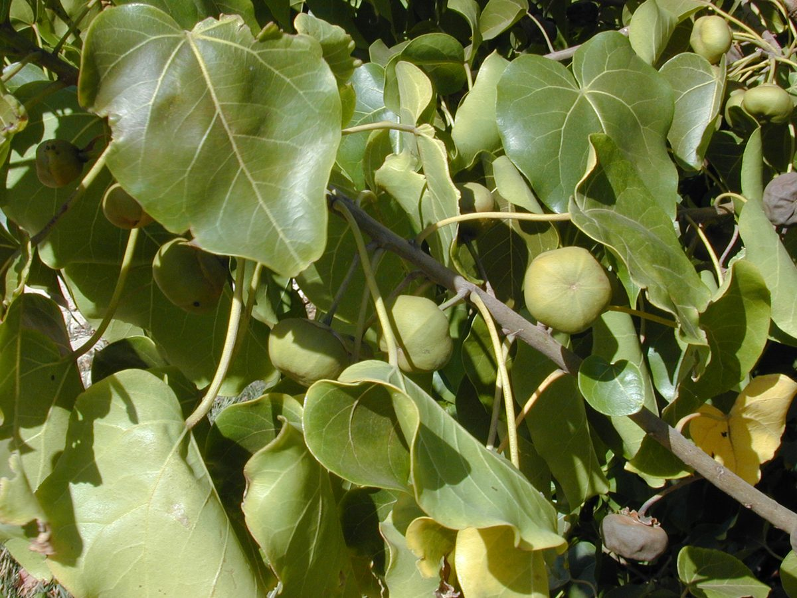
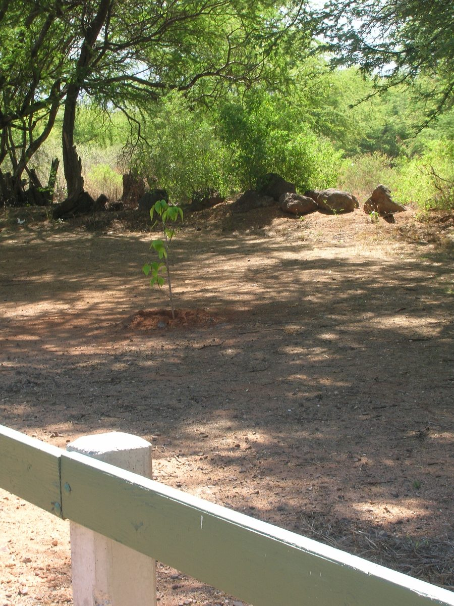

NOTABLE Beach strand Valley mouth
Thespesia populnea
milo · portia tree, Pacific rosewood, seaside mahoe


Quick facts
| Family | Malvaceae |
|---|---|
| Scientific name | Thespesia populnea |
| Hawaiian name(s) | milo |
| English name(s) | portia tree, Pacific rosewood, seaside mahoe |
| Status | Indigenous (native, non-endemic) |
| Conservation | — |
| Coastal zones | Beach strand Valley mouth |
| Occurrence | Scattered along back-beach strand and lower valley mouths on the unpopulated coast; most reliable on Miloliʻi and Nuʻalolo Kai flats and around back-beach pond margins. |
How to identify
- Growth form
- Small evergreen tree, typically 5–10 m tall with a dense rounded canopy; often multi-trunked when growing on windswept shore.
- Size
- 5–12 m tall, canopy 4–8 m across.
- Leaves
- Heart-shaped (cordate) with a long tapered tip, 6–15 cm long, glossy dark green above and paler below, with tiny brownish scales visible on the underside with a hand lens.
- Flowers
- Bell-shaped, 5–7 cm wide, lemon-yellow with a deep maroon centre in the morning; petals fade to pinkish and drop by afternoon. Cup-like calyx persists.
- Fruit / seed
- Distinctive: a flattened rounded woody capsule 2.5–4 cm across, green when young and turning brown-black; does not open widely, and floats — the buoyant capsule is the diagnostic clue in beach wrack.
- Bark / stem
- Grey, becoming furrowed on older trunks; twigs with scaly bark.
- Where it sits on the coast
- Back-beach edge, valley-mouth pond margins, and salt-splash bluffs; tolerates full sun and salt spray but not persistent inundation.
Clinchers (features that lock the ID)
- Heart-shaped leaf with a drawn-out tip and glossy dark upper surface.
- Yellow-with-maroon-centre bell flower in the morning.
- Flattened, woody, non-opening round capsule — floats.
- Never has hairy or lobed leaves like hau.
Look-alikes
- Hibiscus tiliaceus (hau) — Also has heart-shaped leaves and yellow-with-maroon-centre hibiscus flowers, but hau leaves have a fuzzy underside and toothed margin, the tree sprawls sideways into thickets, and the capsule splits open to release seeds (milo's does not).
- Cordia subcordata (kou) — Similar coastal habit and leaf shape, but kou has bright orange (not yellow) flowers and a smaller, harder rounded fruit; also entire (non-tapered) leaf tips.
Ecology
Salt- and drought-tolerant coastal indigenous tree present throughout the Indo-Pacific tropics via floating fruits. Provides nesting habitat for coastal birds and shade in beach communities. [1], [2], [3], [9]
Cultural significance
Milo wood is honored in Hawaiian carving traditions for its rich colour and non-tainting quality; this guide names that relationship without offering harvesting or working guidance.